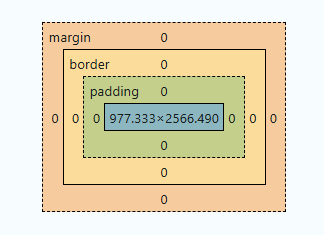

Bloc 2: CSS - espai i caixa
Aquest bloc assenta la base de CSS abans d'entrar en frameworks. L'objectiu és dominar com CSS calcula espais, com resol conflictes d'estils i quines unitats convé usar.
1. Objectiu del bloc
En acabar aquest bloc, l'alumnat ha de poder:
- Entendre com funciona el Box Model.
- Predir quina regla guanya en la cascada.
- Comparar i aplicar especificitat amb criteri.
- Triar unitats adequades per espaiat i mida.
Idea clau: si controles espai i caixa, controles gran part dels problemes reals de maquetació.
2. Box Model: com ocupa espai una caixa
Tot element es representa com una caixa formada per:
- Content: contingut real (text, imatge, icona).
- Padding: espai intern entre contingut i vora.
- Border: vora de la caixa.
- Margin: espai extern entre caixes.

Exemple base
Codi HTML i CSS:
.card-content-box {
box-sizing: content-box;
width: 320px;
padding: 16px;
border: 2px solid #334155;
margin: 12px 0;
background: #e2e8f0;
}
Resultat: la caixa té una amplada visible de 356px: 320 + 16 + 16 + 2 + 2. Té 12px de marge superior i inferior, i cap marge lateral.
Per què passa? Amb content-box, width només fixa l'amplada del contingut. El padding i la vora s'afegeixen a cada costat. El margin queda fora de la vora i no rep el color de fons de la caixa.
Veure demo: Box Model
Amb el model per defecte (content-box), l'amplada visible no és 320px exactes: s'hi afegeixen padding i border.
3. box-sizing: control real de dimensions
Per evitar càlculs manuals, es recomana usar:
Exemple amb les mateixes dimensions
Codi HTML i CSS:
.card-border-box {
box-sizing: border-box;
width: 320px;
padding: 16px;
border: 2px solid #334155;
margin: 12px 0;
background: #bae6fd;
}
Resultat: l'amplada visible és 320px i el contingut disposa de 284px: 320 - 16 - 16 - 2 - 2.
Per què passa? border-box inclou el padding i la vora dins de width. Per això queda menys espai per al contingut. Els marges continuen fora de l'amplada declarada.
Veure demo: Box sizing en acció
Amb border-box, l'amplada declarada ja inclou padding i border.
Comparació ràpida
content-box: amplada final =width + padding + borderborder-box: amplada final =width
Veure demostració: Box Model amb i sense border-box
4. Cascada: quina regla CSS s'aplica
En aquests exemples, amb regles del mateix origen i sense capes de cascada, animacions ni transicions, quan dues regles afecten la mateixa propietat del mateix element, podem resumir la resolució així:
- Importància (
!important). - Especificitat del selector.
- Ordre d'aparició (la darrera guanya si empaten).
Exemple: empat d'especificitat
Codi HTML i CSS:
Resultat: el text es mostra en #0f172a, gairebé negre.
Per què passa? Les dues regles tenen el mateix selector i la mateixa importància. Com que empaten en especificitat, guanya la que apareix més avall al CSS.
Variant: una declaració amb !important
Substitueix el CSS anterior per:
Resultat: ara el text és gris (#475569).
Per què passa? La declaració amb !important té prioritat sobre la declaració normal d'aquest exemple, encara que aquesta aparegui després. !important no augmenta l'especificitat del selector.
Veure demo: Cascada
No depengues de !important com a solució habitual. Millor estructurar bé selectors i components.
5. Especificitat: qui té més pes
La regla amb més pes guanya. Resum pràctic:
- Etiqueta (
p,h2) -> pes baix. - Classe (
.card,.menu-item) -> pes mitjà. - ID (
#hero) -> pes alt.
Veure demo: Especificitat
Exemple: etiqueta, classe i ID sobre el mateix text
Codi HTML i CSS:
Resultat: «Benvinguts al curs» es mostra en vermell (#b91c1c).
Per què passa? Els tres selectors coincideixen amb el paràgraf, però l'ID té més especificitat que la classe i l'etiqueta. La regla #intro guanyaria encara que la poséssim abans de les altres dues.
Si llevam id="intro" de l'HTML, el text serà blau, perquè guanyarà .text-destacat. Si llevam també la classe, serà gris, perquè només hi coincidirà p.
Bon criteri per a primer projecte
- Prioritza classes.
- Evita selectors massa llargs.
- Evita
!importantexcepte casos puntuals molt justificats.
6. Unitats CSS: triar bé les mides
Unitats principals
px: valor fix; útil en detalls com vores fines.rem: relatiu a la mida base del document; ideal per espai i tipografia.%: relatiu al contenidor pare.vw/vh: relatiu a la finestra del navegador.
Recomanació didàctica
Per a un primer projecte modern:
- Usa
remenpadding,margin,gapi tipografia. - Usa
%per amplades fluides. - Reserva
pxper casos concrets.
Veure demo: Unitats CSS
Exemple: un contenidor fluid amb límit d'amplada
Codi HTML i CSS:
<div class="contenidor">
<h3>Títol amb rem</h3>
<p class="seccio">Contenidor fluid amb % i límit en rem.</p>
</div>
html { font-size: 16px; }
* { box-sizing: border-box; }
.contenidor {
width: min(92%, 70rem);
margin-inline: auto;
padding: 1rem;
border: 1px dashed #94a3b8;
}
h3 { font-size: 2rem; margin: 0 0 0.5rem; }
.seccio { margin-block: 2rem; }
Resultat, si l'amplada disponible del pare és de 1000px:
- Contenidor de 920px, incloent-hi
paddingi vora, centrat amb 40px a cada costat. - Espai interior de 16px a cada costat i vora d'1px.
- Títol amb mida de lletra de 32px i marge inferior de 8px.
- Paràgraf amb marges superior i inferior de 32px.
Per què passa? 1rem equival als 16px de l'element arrel (html). El 92% es calcula sobre l'amplada disponible del pare: 1000 × 0.92 = 920px. min() tria el valor més petit entre 920px i 70rem = 1120px. Els marges laterals automàtics reparteixen els 80px sobrants.
Els marges verticals adjacents del títol i del paràgraf col·lapsen en aquest flux normal: entre tots dos hi ha 32px, el marge més gran, i no 8 + 32 = 40px.
Si el pare fa 1400px, el contenidor queda limitat a 1120px, perquè aquest valor és menor que el 92% de 1400px (1288px).
Exemple: unitats de finestra
Codi HTML i CSS:
Resultat: amb una finestra de referència de 1200 × 800px, la portada fa 600 × 200px.
Per què passa? 1vw és l'1% de l'amplada de la finestra i 1vh és l'1% de l'alçada. Aquestes mides depenen de la finestra, no del contenidor pare.
7. Espaiat coherent: ritme visual del projecte
Sense sistema d'espai, la interfície sembla irregular. Una pauta simple:
- Base:
0.5rem - Escala habitual:
0.5rem,1rem,1.5rem,2rem,3rem
Aplicació pràctica:
paddingintern de targetes:1remo1.5rem- espai entre blocs (
margin-block):2rem - separació entre elements en fila (
gap):1rem
Exemple: dues targetes amb el mateix espaiat
Codi HTML i CSS:
<div class="targetes">
<article class="targeta">Primera targeta</article>
<article class="targeta">Segona targeta</article>
</div>
html { font-size: 16px; }
.targetes {
display: flex;
gap: 1rem;
margin-block: 2rem;
}
.targeta {
padding: 1.5rem;
background: #e2e8f0;
}
Resultat: les targetes apareixen en fila, amb 16px entre elles i 24px d'espai interior a cadascuna. El conjunt té marges verticals de 32px.
Per què passa? display: flex disposa les targetes en fila per defecte. gap separa les targetes entre si, padding separa el text dels límits de cada targeta i margin-block defineix els marges externs del conjunt. Tots els valors segueixen la mateixa escala basada en rem.
8. Errors habituals en espai i caixa
- Barrejar moltes unitats sense criteri.
- No aplicar
box-sizing: border-boxal començament. - Fer servir IDs per tot i després no poder sobreescriure estils fàcilment.
- Corregir conflictes amb
!importanten lloc de revisar cascada/especificitat. - Espais aleatoris que trenquen la consistència visual.
9. Checklist de revisió
Abans de donar per bo el CSS:
- Cada component té clar
padding,borderimargin. - Saps explicar per què guanya una regla i no una altra.
- Predominen classes per damunt d'IDs.
- Les mides principals estan en
remi les amplades en%/rem. - El ritme d'espais és coherent a tota la pàgina.
Recursos oficials de consulta
- MDN - Introduction to the CSS box model
- https://developer.mozilla.org/en-US/docs/Web/CSS/CSS_box_model/Introduction_to_the_CSS_box_model
- MDN - box-sizing
- https://developer.mozilla.org/en-US/docs/Web/CSS/box-sizing
- MDN - Cascade
- https://developer.mozilla.org/en-US/docs/Web/CSS/Cascade
- MDN - Specificity
- https://developer.mozilla.org/en-US/docs/Web/CSS/Specificity
- MDN - Values and units
- https://developer.mozilla.org/en-US/docs/Learn/CSS/Building_blocks/Values_and_units
- W3C - CSS Cascading and Inheritance Level 5
- https://www.w3.org/TR/css-cascade-5/
10. El 20% que han de recordar sempre
- Box Model: tota caixa té content, padding, border i margin.
box-sizing: border-boxevita molts errors de dimensions.- Cascada: importància, especificitat i ordre decideixen el resultat.
- Especificitat: classes millor que IDs per mantenibilitat.
- Unitats:
remper espais i text,%per amplades fluides. - Consistència: un sistema d'espaiat simple val més que valors improvisats.
Resum del bloc
Aquest bloc no tracta de decoració, sinó de control tècnic del CSS. Quan l'alumnat domina Box Model, cascada, especificitat i unitats, pot construir interfícies sòlides, previsibles i fàcils de mantenir; exactament la base que cal abans de Bootstrap o Tailwind.